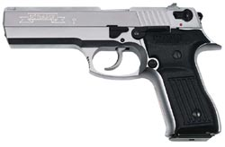
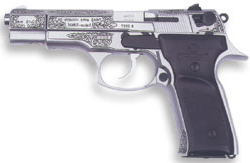
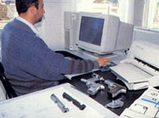
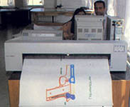
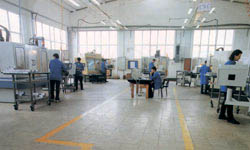

|
T.S.K.
kadrosunda görev yapan Subay, Astsubay ve Uzman Jandarma Çavuþ
kadrolarýyla ilgili zati demirbaþ tabanca alýmý ihalesine
katýlan TÝSAÞ, ürettiði Zigana M16 ve Zigana T model tabancalarýyla
testleri baþarýyla geçerek 1 Mayýs 2004 tarihinde ihaleyi
kazandý.
Konuyla
ilgili bilgi veren TÝSAÞ Yönetim Kurulu Baþkaný Ömer Hacýoðlu,
"Ýhaleye dört firma girdi ve dört firmadan üç firmanýn tabancalarý
testleri geçti. Üç firmanýn birer silahý testi kazanýrken
bizim iki silahýmýz; Zigana T ve Zigana M16 testi geçti. Þu
anki kapasitemiz, mevcut talepleri karþýlayabiliyor. Yeni
aldýðýmýz ihale için, ilave 1 milyon dolarlýk yatýrým yapacaðýz."
dedi...
Hacýoðlu,
Amerika'dan da tabanca sipariþi aldýklarýný bildirerek, þunlarý
söyledi: "Amerika'dan bir firmanýn sipariþi oldu. Numune ürün
tabanca gönderdik. Ürünlerimiz beðenildi, sipariþ vermek istediler.
Buna ilaveten, Amerika'dan üç firma daha parça sipariþi vermek
istedi. Fakat, bu sipariþler þu an için bizim açýmýzdan bir
anlam ifade etmiyor; taleplere cevap veremiyoruz. Çünkü, bizim
Milli Savunma Bakanlýðý ile anlaþmamýz var. Zaten þu anki
altyapýmýz da bu sipariþlere cevap verecek düzeyde deðil...
Trabzon
Silah Sanayii AÞ hakkýnda da bilgi veren Hacýoðlu, fabrikanýn
1994 yýlýnda kurulduðunu söyledi. Hacýoðlu'nun verdiði bilgiye
göre, TÝSAÞ bugüne kadar 6 ayrý ürün geliþtirdi. Türk patenti
ile üretilen ürünler, NATO standartlarýný taþýyor. Halen fabrika
bünyesinde 128 kiþi çalýþýyor. Ürünler, TÝSAÞ bünyesindeki
Ar-Ge bölümünde geliþtiriliyor. Fabrikanýn halen tek vardiya
yýllýk üretim kapasitesi, 20 bin adet tabanca. Yeni sipariþlere
cevap verebilmek için ilave 1 milyon dolarlýk bir yatýrým
yapýlarak kapasitenin yýllýk 60 bin adet tabanca üretime çýkarýlmasý
planlanýyor.
Ýhaleyi
kazanan tabancalarýn bazý teknik özellikleri:
ZÝGANA
T
- Kalibre:
9x19 mm
- Etkili
Menzili: 100 m
- Çalýþma
Sistemi: Basit Geri Tepmeli, Yarý Otomatik
- Þarjör
Kapasitesi: standart 15+1, Özel 17+1
- Ýlk
Hýzý: 370 artý-eksi 10 m/s
- Tabanca
Aðýrlýðý (Boþ Þarjörlü): 980 g
- Uzunluk:
220 mm
- Yükseklik:
140 mm
- Geniþlik:
36 mm
- Namlu
Uzunluðu: 130 mm
- Sýcaklýk
Limiti: -35 °C/+60 °C
- Min.
Namlu Atýþ Ömrü: 25.000
ZIGANA
M16
- Kalibre:
9x19 mm
- Etkili
Menzili: 75 m
- Çalýþma
Sistemi: Basit Geri Tepmeli, Yarý Otomatik
- Þarjör
Kapasitesi: Standart 15+1, Özel 17+1
- Ýlk
Hýzý: 350 ± 10 m/s
- Tabanca
Aðýrlýðý (Boþ Þarjörlü): 940 g
- Uzunluk:
218 mm
- Yükseklik:
140 mm
- Geniþlik:
34 mm
- Namlu
Uzunluðu: 126 mm
- Sýcaklýk
Limiti: -35 °C/+60 °C
- Min.
Namlu Atýþ Ömrü: 25.000
Zigana
T tabanca TÝSAÞ Ar-Ge'sinde tasarlanmýþ, projelendirilmiþ,
testleri yapýlmýþ ve 2002 yýlýnda satýþa sunulmuþtur.
Tasarýmda silah boyutlarý ve görünüþü deðiþtirilerek psikolojik
olarak da vurucu gücünün arttýrýlmasý düþünülmüþtür. Silah
aðýrlýðý gövdede özel alaþýmlý hafif metal kullanýlarak 1
kg altýna düþürülmüþ ve kullaným kolaylýðý saðlanmýþtýr. Silahýn
namlusu özel malzemeden soðuk dövülerek imal edilmiþtir. Bu
teknoloji hali hazýrda silah üretiminde kullanýlan en güvenilir
ve kaliteli teknolojidir. Namlu dýþý korozyonlara karþý krom
kaplanmýþtýr. Kapak ve diðer parçalar özel çelikten imal edilmiþlerdir.
Çalýþan tüm parçalar ýsýl iþlem görmüþ, çalýþma ömürleri uzatýlmýþ
ve aþýnmaya karþý dirençleri arttýrýlmýþtýr. Silahta kullanýlan
tüm yaylar kaliteli çelikten üretilip kontrol sonrasý silahlara
monte edilmiþtir. Her silah parça temin, imalat, kaplama ve
montaj safhalarýnda kalite kontrolden geçerek üretilmiþ, sonrasýnda
göz ve atýþ kontrolüne tabi tutularak satýþa arz edilmiþtir.
Zigana modeli tabancalar aþaðýda açýklanan askeri testlerden
de baþarýyla geçmiþtir:
Kafile
içinden iki silah alýnýr, bu silahlarla birer þarjör fonksiyon
atýþý sonrasýnda, bir adedi boya kontrolü için 24 saat tuz
testine, bitiminde 1 metre yüksekten çelik blok üzerine çeþitli
konumlarda düþürülerek, test sonrasý bir þarjör mermi atýlýp,
darbelere karþý dayanýklýlýk testine; diðer silah ise ilk
hýz testine, 25 metre mesafeden hedefe yapýlan 10 atýþýn 16
cm daire içinde olmasý þeklinde daðýlým testine, her iklimde
atýþ yapabilmesinin kontrolü için -35 derecede 6 saat bekletilip
atýþ yapýlarak soðuk ve + 55 derecede 6 saat bekletilip atýþ
yapýlarak sýcak hava testine, her 60 atýþ sonrasý namlunun
kýsa bir süre soðutulmasý ve her 600 atýþta temizlik bakýmý
ile aralýksýz 5000 mermi atýþý yapýlarak, zorlaþtýrýlmýþ atýþ
testine tabi tutulur. Bundan sonra tekrar ilk hýz ve daðýlýmý
alýnýr.
TÝSAÞ
hakkýnda:
Trabzon
Silah Sanayi A.Þ., Doðu Karadeniz Silah Projesi kapsamýnda
Trabzon ilinde tabanca imalatý gerçekleþtirmek üzere 1993
yýlýnda kurulmuþtur. TÝSAÞ kuruluþundan bu güne kadar geçmiþinden
gelen tecrübesini ileri teknoloji ile birleþtirip modern bir
kuruluþ olabilme yolunda büyük atýlýmlar gerçekleþtirmiþtir.
TÝSAÞ
ilk olarak; projesine MKEK- SÝLAHSAN A.Þ. hazýrladýðý FATÝH
13 7.65 mm tabancanýn ilk prototip üretimini 10/04/1995 tarihinde
baþarý ile tamamlamýþtýr...


Ar-Ge
1998
yýlýnda baþlatýlan TÝSAÞ Ar-Ge Müdürlüðü, KTÜ - KOSGEB TEKMER
Müdürlüðü (Karadeniz Teknik Üniversitesi - KOSGEB Teknoloji
Geliþtirme Merkez Müdürlüðü) ile koordineli yürütülen ilk
Türk tasarým projesi; KANUNÝ 16.9x19 mm tabancý üretimi ile
sonuçlanmýþtýr. 1999 yýlýnda bu ürüne ilk Türk tasarýmý patent
tescili yaptýrýlmýþtýr.
Projenin
ikinci aþamasýnda TÝSAÞ'ýn Ar-Ge'sinde yapýlan çalýþmalar
sonunda KANUNÝ S 2000 ve ZÝGANA M16 tabancalarý ürün yelpazesine
katýlmýþtýr.
Tabanca
üretiminde diðer ülkelere pazarlamanýn gerçekleþtirilmesini
saðlamak maksadý ile konusunda, geniþ tecrübelere üstün nitelikli
teknolojiye sahip uluslar arasý alanda kendini kabul ettirmiþ
bir partner arama çalýþmalarýna geçilmiþtir.
Sürekli
müþteri memnuniyeti saðlanmasý ve güvenli ortamda üretim gerçekleþtirmek
üzere baþlatýlan sistem çalýþmalarý 1998 yýlýnda T.C. M.S.B.
teknik hizmetler dairesi tarafýnda tesis güvenlik ve üretim
izni ile belgelenmiþtir. Kalite Yönetimi sistemi çalýþmalarý
ise 2001 yýlýnda Almanya'da kurulu TÜV Rheinland/Berlin-Brandenburg
kuruluþu tarafýndan ISO 9001 belgesi ile belgelenmiþtir.
Tasarým
Kontrolü
TÝSAÞ'ýn
ürettiði ürünlerin sürekli müþteri memnuniyetini saðlayabilmesi
için, gerekli tasarým faaliyetleri ve bu faaliyetlerin nasýl
kontrolünün saðlanacaðý kalite güvence sistemi içerisinde
dökümante edilmiþtir. Tasarým faaliyetleri tamamen CAD/CAM
bilgisayar teknolojisi kullanýlarak tasarlanýr ve üretilir.
TÝSAÞ'ta
tasarým ve geliþtirme faaliyetleri üç ana grupta incelenirler.
Bu faaliyet gruplarý:
Revize
tasarýmlar,
Yeni tasarýmlar,
Sipariþ Tasarýmlardýr.
TÝSAÞ'ta
tasarým ve geliþtirme planlarý yýllýk olarak Ar-Ge Müdürü
tarafýndan hazýrlanýr ve Genel Müdüre onaylatýlýrlar.
Revize
Tasarýmlar: Mevcut üretilmiþ ürünler veya ekipmanlarýn fonksiyoneliðinin
geliþtirilmesi için yapýlan tasarým faaliyetleridir. Bu faaliyetler
Ar-Ge Müdürü tarafýndan baþlatýlýrlar. Baþlatýlan bu faaliyetler
kapsamýnda Ar-Ge Müdürü revize edilen ürüne ait resimleri
proje þefliðine çizdirerek eski resimlerin kullanýlmasýný
engellemek için gerekli iþaretlemeler yapýlýr. Ar-Ge Müdürü
gerek görmesi halinde ilgili bölüm müdürleriyle tasarým deðerlendirme
toplantýsý düzenler. Ar-Ge planlarý dýþýnda gelen revizyon
tasarýmlar içinde Ar-Ge Müdürü revizyon isteðini deðerlendirerek
olumlu ve olumsuz olarak deðerlendirme sonucunu Genel Müdüre
iletir ve revizyon talebinde bulunan kiþiye iade eder.
Yeni
Tasarýmlar: Piyasa þartlarýnýn gerektirdiði veya TÝSAÞ çalýþanlarý
tarafýndan ürün veya üretim ekipmanlarýnýn tasarýmý için Ar-Ge
Müdürü Ar-Ge tasarým planlarýnda belirtilmiþ yeni tasarýmlara
ait pazar araþtýrmalarýný ve tasarýmýn gerçekleþmesi için
gerekli adýmlara uyarak tasarým faaliyetini gerçekleþtirir.
Yeni tasarým adýmlarý aþaðýdaki gibidir:
- Pazar
araþtýrmasý ve müþteri istekleri
- Tasarým
isteði
- Tasarým
ana hatlarý
- Araþtýrma
zamaný
- Malzeme
araþtýrmasý
- Tasarým
özelliði
- Ölçekli
tasarým ve model
- Tasarým
projesi çizimi
- Prototip
model
- Patent
tescil çalýþmasý
- Sipariþ
Tasarýmý: Müþteriler tarafýndan TÝSAÞ'tan istenilen tasarým
faaliyetleri Ar-Ge Müdürü tarafýndan deðerlendirilerek Genel
Müdüre onaylatýlýr. Bu tasarým faaliyetleri gerçekleþirken
yeni tasarým adýmlarý kullanýlýr. Bu faaliyet müþterinin
tasarýmý onaylamasýndan sonra geçerlilik kazanýr.
Üretim
Kontrolü
TÝSAÞ'ýn
yýllýk üretimi %60 kapasite kullanýmý ile 15,000 Adet/Yýl
tabancadýr. Fakat planlanan giderlerin karþýlanmasý için yýllýk
minimum Üretim miktarý 10,000 adet/yýl olmalýdýr.
TÝSAÞ'ta
proses faaliyetleri sözleþmenin gözden geçirilmesi toplantýsý
sonucu kesinleþen üretimler için Ýmalat Müdürü tarafýndan
baþlatýlýr ve prosesin kontrolü için Kalite Güvence Müdürü
ile koordineli çalýþýlýr. TÝSAÞ'da üretim yeterliliði hesaplanmýþ
modern ve son teknoloji CNC tezgahlarda CAD/CAM sistemleri
ile gerçekleþir.
Bu
faaliyetler ýþýðýnda Ýmalat Müdürü, üretilecek parçalara ait
resim veya operasyon kartlarýný Yönetim Temsilcisinden, üretilecek
parçaya ait malzeme veya ekipmanlarý depo sorumlusundan, mastar
ve ölçü aletlerini doðrulama sorumlusundan tedarik eder. TÝSAÞ'ta
proses adýmlarý 1. kýsým imalat ve 2. kýsým imalat olarak
ikiye ayrýlýr.
1.
Kýsým Ýmalat: CNC
Mekanik
Ýmalat
2.
Kýsým Ýmalat: Takým-Aparat-Mastar
Markalama
Isýl Ýþlem
Yüzey Ýþlem
Yüzey Kaplama
Montaj
Daha
fazla bilgi için: www.trabzonsilah.com |